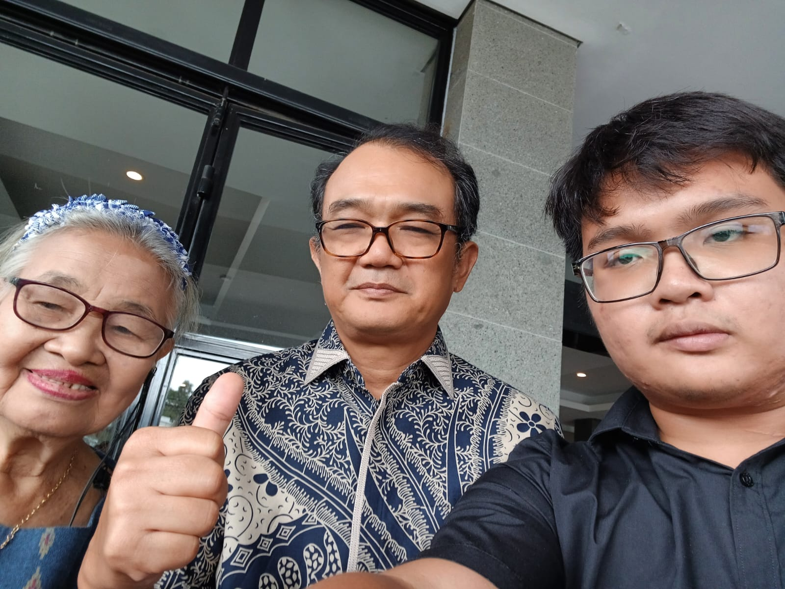
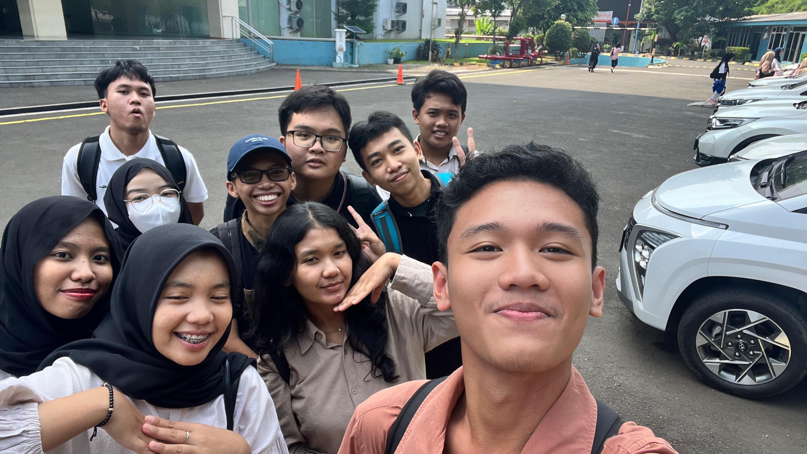
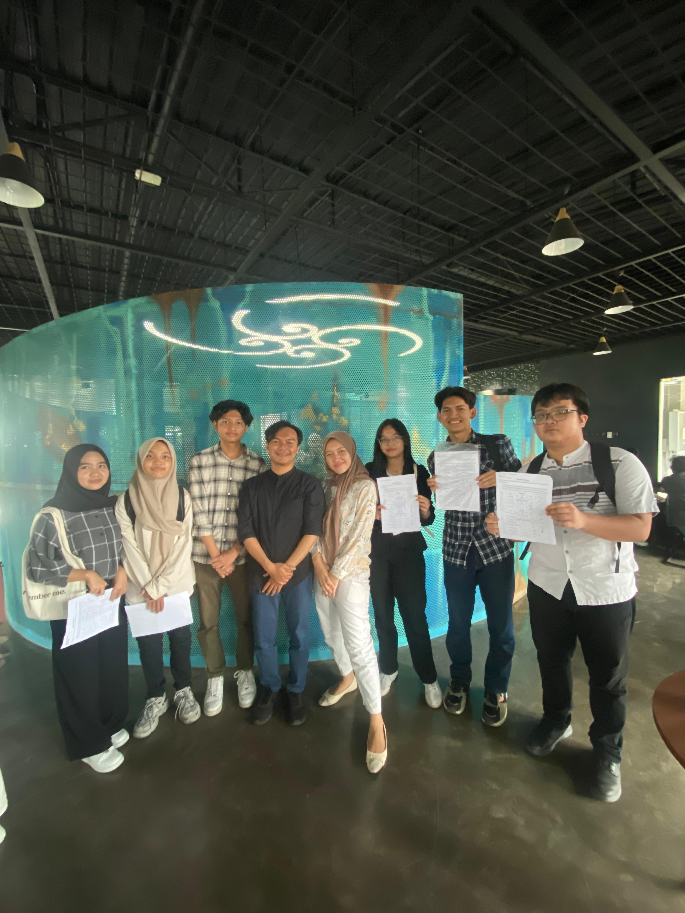
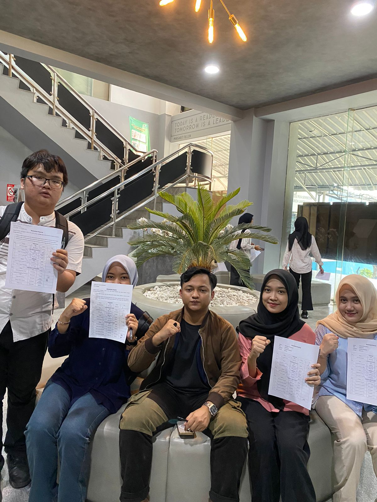

Hai, nama saya Felix Ewaldo Panggabean, biasa dipanggil Felix. Saya sekarang sedang menginjak usia 19 tahun, saya lahir di Palembang pada tanggal 23 bulan Agustus tahun 2005. Saya merupakan anak kedua dari 2 bersaudara. Saya tinggal di kota Palembang, tepatnya di Jl. Silaberanti Lrg. Cempaka No.112 Rt 006 RW 002 Kecamatan Jakabaring Kelurahan Silaberanti Kota Palembang Provinsi Sumatera Selatan. Saya dulu bersekolah di SD Xaverius 7 Palembang, lalu ber-smp di SMP Xaverius Maria Palembangg dan mengakhiri masa sekolah saya di SMA Xaverius 1 Palembang. Ayah saya kerjanya di PT Taspen Persero, lalu ibu saya bekerja di PT Pegadaian Persero. Saya berkewarganegaraan Indonesia, dan bersuku Batak lebih tepatnya Batak Toba. Agama saya yakni Kristen Protestan. Saya sekarang sedang berada di Jakarta lebih lengkapnya lagi di Kota Administratif Jakarta Barat di daerah Cengkareng, dan saya di Jakarta ini sedang mengejar gelar S1 saya di Institut Teknologi PLN. Saya memiliki cita-cita yakni meraih gelar S2 bahkan sampai S3 dan saya juga memiliki impian untuk bisa keluar dari Indonesia, lebih tepatnya ke luar negeri. Negeri yang saya impikan yakni Jepang, Malaysia, Singapura, Australia, Inggris, UAE, dan Canada. Dulu, saya memiliki hobi yakni bermain musik, membaca buku, dan berolahraga, akan tetapi semenjak memasuki masa kuliah ini saya lebih tertarik untuk berinteraksi dengan orang luar, bepergian dan sharing ilmu antar satu sama lain. Karena saya rasa bahwa untuk meraih kesuksesan itu, kita jangan hanya pinter saja, akan tetapi kita juga harus memiliki banyak koneksi yang baik dan relasi yang banyak, agar dapat membantu kemampuan sosial kita dann membantu kemampuan publik speaking kita.
Berikut ini adalah dokumentasi saya dengan keluarga dan teman :
1. Bersama Keluarga
2. Bersama Teman Kampus
3. Bersama Teman Dekat Dari SMA

4. Bersama Teman Pleton Ettercap LDKM
5. Bersama Teman Dari Pleton LDKM Lainnya
Dokumentasi Video Felix :
Berikut tadi adalah dokumentasi Felix bersama orang yang ada di sekitar kampus dan juga dokumentasi dalam berupa video-video lama, mohon maaf apabila gambar dan videonya kurang jelas ataupun blur, Terimakasih juga telah mengakses dan melihat dokumentasi saya ! :)
About